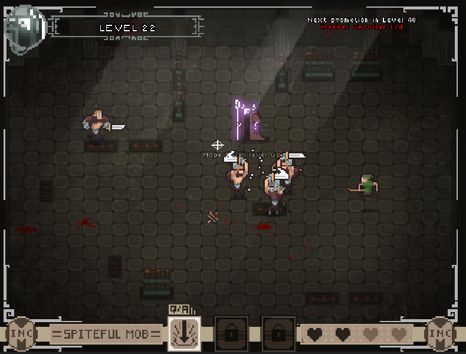
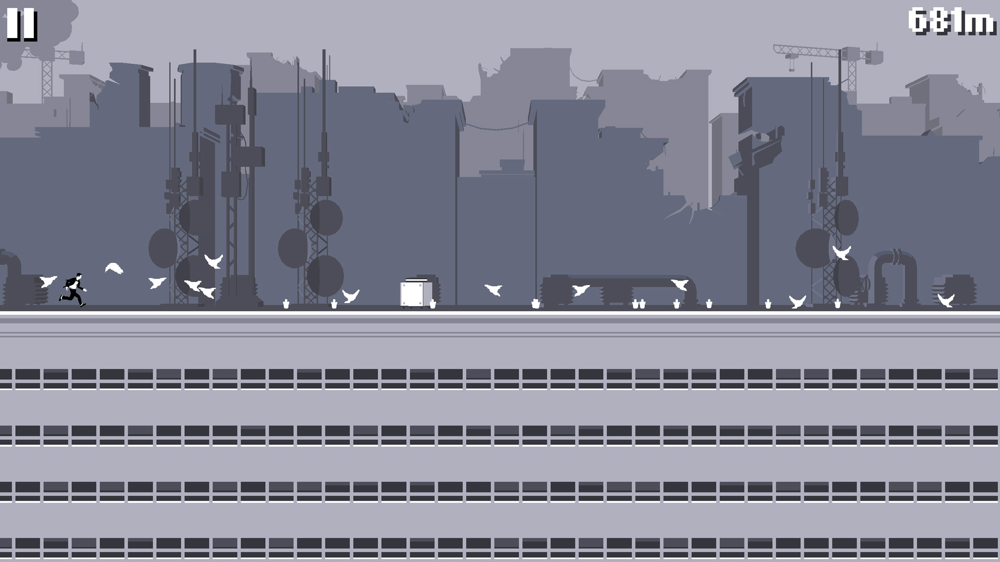

March 5, 2019
The three games I played were Mobs Inc., Jurassic Heart, and Canabalt. Mobs Inc. is a fighting game where you are a new employee that was hired to battle the adventurers in the dungeon. You want to impress your boss by killing many adventurers as you can and level up to your level. The first goal is to reach level twenty. You will have four hearts which are the health points. After four deaths, the game will restart a new game. To move your character, you move your mouse cursor and left click to attack the adventurers. Jurassic Heart is a dating game where you are going out with a t-rex and go to a music store to purchase a new ukulele for him. This game is about making choices and each choice will lead to a different outcome. There are good ending and bad ending. The three choices will appear three times and you must pick a choice. You will just need your mouse and left click to continue the scene and press on your choice. Canabalt is about jumping on buildings and keep surviving to get the highest point. There will be obstacles and gaps in your way so you will have to jump to get to the other side of the building. The key is the x button to jump.
Mobs Inc. and Canabalt have a connection. Once you start the game, you will immediately have to press the buttons where you have to beat your enemies and jump on the other buildings to survive. Both game styles are pixel style.


The difference between observing play and playing the game yourself is that while observing someone play, you will think the game is easy and you won’t feel the experience of playing the game. When you play the game yourself, you will realize the game is difficult as it looks and you will feel the experience of the game.